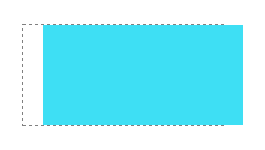
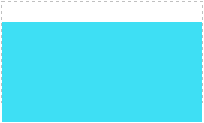
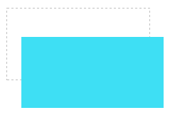

语法：
transform:translate(x,y) | translateX(x) | translateY(y) | translateZ(z) | translate3d(x,y,x)
说明：
translate()方法将元素沿着水平方向（X轴）和垂直方向移动（Y轴）
（1）translateX(x)：元素仅在水平方向移动（X轴移动）；x表示元素在水平方向（X轴）的移动距离，单位为px、em或百分比等；当x为正时，表示元素在水平方向向右移动（X轴正方向）；当x为负时，表示元素在水平方向向左移动（X轴负方向）。
（2）translateY(y)：元素仅在垂直方向移动（Y轴移动）；y表示元素在垂直方向（y轴）的移动距离，单位为px、em或百分比等；当y为正时，表示元素在垂直方向向下移动；当y为负时，表示元素在垂直方向向上移动。
（3）transklate(x,y)：元素在水平方向和垂直方向同时移动（X轴和Y轴同时移动）；x表示元素在水平方向（x轴）的移动距离，y表示元素在水平方向（y轴）的移动距离；
注意，Y是一个可选参数，如果没有设置Y值，则表示元素仅仅沿着X轴正方向移动。
3D的还未普及，以后完善
使用方法：
transform:translateX(20px);; /*向右移动20像素*/
兼容性：
- 浅绿 = 支持
- 红色 = 不支持
- 粉色 = 部分支持
| 支持版本\类型 | IE | Firefox | Safari | Chrome | Opera |
|---|---|---|---|---|---|
| 版本 | 6-8 | 4-18 | 5.1.7 | 13-23 | 11.5-12.5 |
| 版本 | 9-10 |
ie9 以上，和高版本浏览器。不过transform都要加上对应的前缀，-o,-moz,-webkit,-ms
Internet Explorer 10、Firefox、Opera 支持 transform 属性。
Internet Explorer 9 支持替代的 -ms-transform 属性（仅适用于 2D 转换）。
Safari 和 Chrome 支持替代的 -webkit-transform 属性（3D 和 2D 转换）。
Opera 只支持 2D 转换。
事例：
translateX(x)
div{
width:200px;
height:100px;
color:white;
background-color: #3EDFF4;
text-align:center;
transform:translateX(20px);
-webkit-transform:translateX(20px); /*兼容-webkit-引擎浏览器*/
-moz-transform:translateX(20px); /*兼容-moz-引擎浏览器*/
}

translateY(y)
div{
width:200px;
height:100px;
color:white;
background-color: #3EDFF4;
text-align:center;
transform:translateY(20px);
-webkit-transform:translateY(20px); /*兼容-webkit-引擎浏览器*/
-moz-transform:translateY(20px); /*兼容-moz-引擎浏览器*/
}

translate(x,y)
div{
width:200px;
height:100px;
color:white;
background-color: #3EDFF4;
text-align:center;
transform:translate(20px,40px);
-webkit-transform:translate(20px,40px); /*兼容-webkit-引擎浏览器*/
-moz-transform:translate(20px,40px); /*兼容-moz-引擎浏览器*/
}

拓展其实，单纯地对某个元素设置位移是没有太多实际的意义。位移translate()方法一般都是结合CSS3动画一起使用，从而实现上下左右移动的动画效果。见动画分析